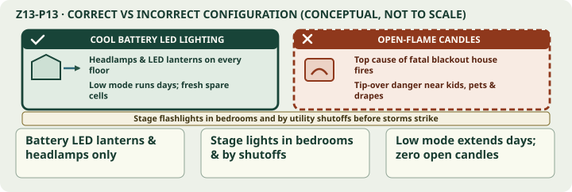

Z13-P13 · Home survival and utilities · New manuscript
Replace candles with safe battery LED lighting during residential outages
Eliminate preventable outage candle house fires while keeping rooms, stairs, and bathrooms safely lit for days.
When it applies · Every home, apartment, or cabin preparing emergency illumination for nighttime blackouts.
Equipment · Battery LED lanterns, headlamps, flashlights, spare alkaline/lithium primary batteries, and reflective tape on stairs/shutoffs.

Actions
- Use LED flashlights, hands-free headlamps, and battery-powered LED lanterns exclusively during outages—open-flame candles are a leading cause of fatal outage house fires, especially around children, pets, drapes, and fatigued occupants.[U04, U01]
- Stage one working flashlight with fresh batteries in every occupied bedroom, near the main breaker/water shutoff, and in the kitchen so no one walks down dark stairs searching for light.[U04, U14]
- Run LED lanterns on low-output modes to multiply battery life tenfold across multi-day blackouts, and store spare batteries cool and dry with annual expiration checks.[U01, T12]
Failure recognition · Placing burning jar candles on carpeted hallways and bedside tables overnight during a winter blackout.[U04]
Verify · Confirm zero open-flame candles in outage kits, working LEDs staged on each floor, and fresh spare batteries inspected.[U04, T12]
Stop or change course · If a candle or open flame is ever knocked over or catches fabric, evacuate immediately and call 911 if fire exceeds safe extinguisher scope.[U04]
Evidence and editorial notes
- T12 · FEMA / Ready.gov · Build a Kit (current web edition)
- Section: Build a Kit > Basic Disaster Supplies Kit and Maintenance · Conditions: Overnight and multi-day emergency readiness
Support: Assemble water, food, light, NOAA/battery radio, first aid, whistle, local maps, sanitation, medications, and backup power; inspect expiration dates and batteries regularly.
Limitations: Standard 72-hour kits do not cover extended multi-day isolation without replenishment or specialized cold/medical items. · Conflicting evidence: None; links kit readiness to periodic maintenance checks.
Editorial note: Supports equipment readiness, inspection, and overnight-emergency cards. · Specialist reviewer: Emergency management and field readiness
Primary source · checked 2026-11-24 - U01 · FEMA / Ready.gov · Power Outages (current web edition)
- Section: Power Outages > Preparing and Responding Safely · Conditions: Residential utility electrical outages of hours to days
Support: Keep phones/medical batteries charged, maintain flashlights instead of candles, unplug sensitive appliances to protect against restoration surges, and verify backup power plans for electrically dependent medical devices.
Limitations: Home outage durations vary widely by grid damage; extended winter outages require heat/evacuation contingencies. · Conflicting evidence: None; aligns with CPSC and NFPA.
Editorial note: Establishes household outage baseline and medical-power priority in Z13. · Specialist reviewer: Emergency management and electrical safety
Primary source · checked 2026-11-24 - U04 · FEMA / Ready.gov · Home Fires (current web edition)
- Section: Home Fires > Smoke Alarms, Fire Extinguishers, and Escape Plans · Conditions: Residential fire prevention during outages and supplemental heating
Support: Test smoke alarms monthly on every level and outside sleeping areas, keep two exits clear from every room, store fuels outside living spaces in approved containers, and evacuate immediately if a fire exceeds incipient containment.
Limitations: Candles and improvised indoor flames dramatically elevate outage house-fire deaths. · Conflicting evidence: None; integrates with CPSC CO-alarm rules (C09).
Editorial note: Anchors outage fire prevention, fuel storage, and exit readiness in Z13. · Specialist reviewer: Fire prevention and residential safety
Primary source · checked 2026-11-24
Current assessment · W2C-E014 (2026-11-25) · Open: source scope does not match the claim; escalated: Supported: smoke alarms on every level including the basement; batteries twice a year unless 10-year lithium; replace units every 10 years or per manufacturer; keep flammable liquids away from heat sources; refuel generators outdoors. Limits: Not on the page although U04 asserts them: monthly testing, alarms outside sleeping areas, two exits from every room, storing fuels outside in approved containers, extinguisher thresholds, and grease-fire guidance. - U14 · FEMA / Ready.gov · Make a Plan (current web edition)
- Section: Household Emergency Planning, Utility Maps, and Outage Checklists · Conditions: Pre-outage residential documentation and household drills
Support: Document main water, electrical panel, and gas shutoff locations, utility outage phone numbers, medical power registries, and neighborhood check-in networks on paper before storms hit.
Limitations: Utility medical-priority lists do not guarantee uninterrupted power during major ice storms or grid blackouts. · Conflicting evidence: None; bridges Z01 planning with Z13 household infrastructure.
Editorial note: Grounds household utility mapping and vulnerable-occupant contingencies. · Specialist reviewer: Emergency management and accessibility specialist
Primary source · checked 2026-11-24
Source lineage · FEMA Ready.gov Home Fires and Power Outages; new manuscript · Classification · New manuscript.